I have a lot of presentations at slides.com/bahmutov, and it is difficult to find a specific slide sometimes, even when I know there is one. I was looking for ways to scrape my presentations and send the search records to Algolia for indexing. In this presentation, I will show the scraper I have written for this purpose.
- The presentation
- The slide format
- The scrape selectors
- Browsing and scraping the slides
- Filtering records
- Algolia application
- Replacing objects
- The search page
- Scraping any URL
- See also
🎁 You can find the source code for this blog post at bahmutov/scrape-book-quotes. This blog is necessarily long, since it needs to provide every relevant detail, but the ultimate truth is in the code.
The presentation
For this blog post I have created a small presentation slides.com/bahmutov/book-quotes with a few slides with famous book quotes. The slides are implemented using Reveal.js framework that I like using. Here is the overview of the slides: there is a main horizontal row, and a single column in the middle.
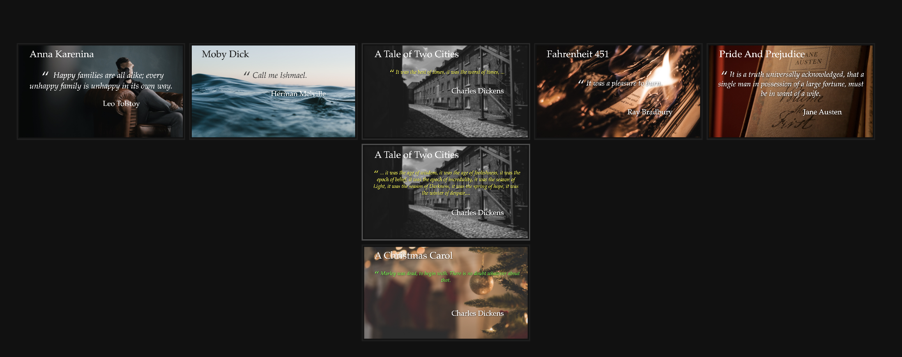
The slide format
When editing Reveal.js slides, you can add text and various headers. Commonly, I use "Heading 1" for each slide's title.
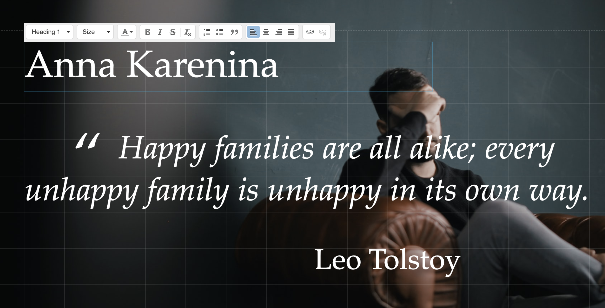
The "Heading 1" text becomes the "H1" HTML element. The "Heading 2" becomes "H2" element, and so on. Regular text becomes "P" HTML element. You can see these elements marked in the HTML screenshot below.
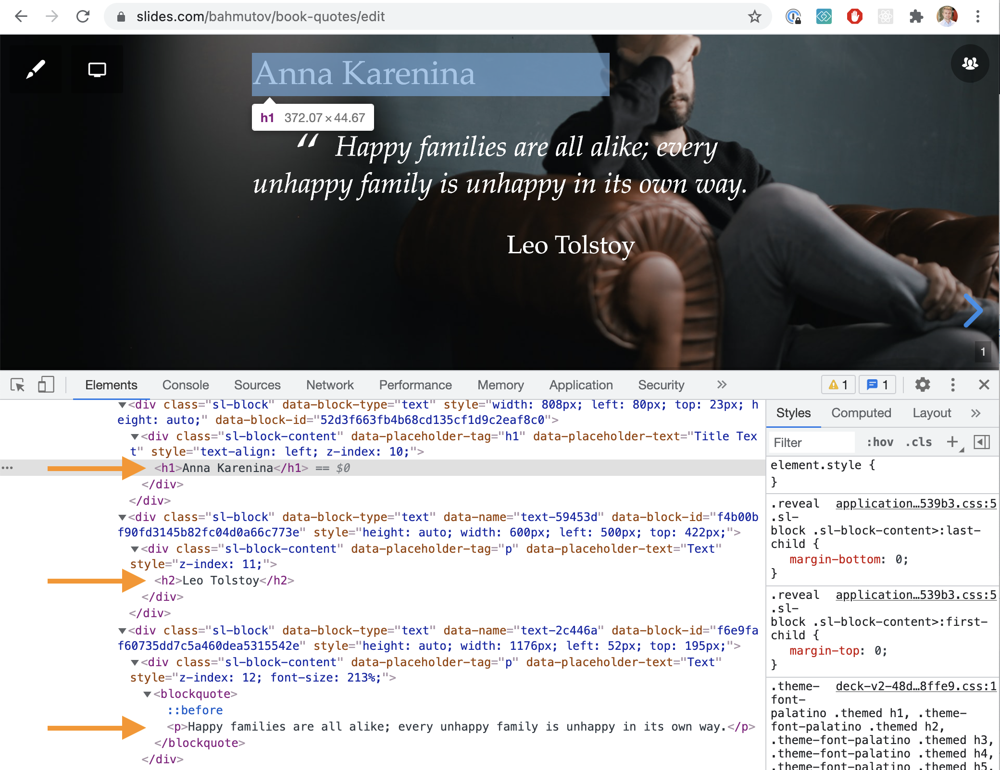
The slide deck also has an element below the presentation's title and description.
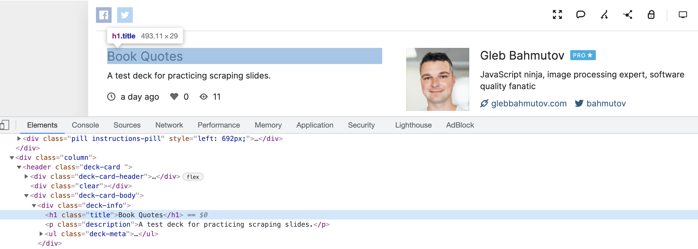
The title and the description could be considered the top-level information in the deck.
The currently shown slide has the class "present". We can scrape each slide one by one.
The scrape selectors
The default Algolia scraper does not work very well with the highly dynamic Single-Page Application like a Reveal.js presentation. Thus we need to browse the slides, grab the text from the elements, and send the records to Algolia index ourselves.
In order to scrape each slide, we need to select the h1, h2, p elements. Algolia documents the various text levels in its config documentation. In our case, the selectors I picked are:
1 | lvl0: ".deck-info h1" |
Note: potentially we could grab all document elements' using the selectors without the .present class and form the individual slide URLs like bahmutov/book-quotes, bahmutov/book-quotes#/1, bahmutov/book-quotes#/2, bahmutov/book-quotes#/2/1, etc. ourselves. But I would think really browsing the slides is more fun, isn't it?
Browsing and scraping the slides
To load the presentation, browse the slides, and scrape the HTML elements, I will use Cypress.io test runner. To go through each slide, I am using cypress-recurse plugin. See the video below to learn how the test goes through the slides.
While browsing, let's extract the matching elements from the slide and save them in an array to be uploaded to the Algolia index later. Here is the initial code
1 | /// <reference types="cypress" /> |
The records accumulate in the records list with each slide, as you can see in the DevTools console.

We can save the records as a JSON file to be sent to Algolia next.
1 | // recurse through the slides |
1 | [ |
Be careful about the stack
Reveal.js decks can have columns of slides. The column is called a stack, and it also has its own "present" class.
1 | <section class="stack present"> |
Thus to grab the current slide we need to use the class "present", but without the "stack" class. In CSS this can be expressed as .present:not(.stack) selector. Thus our content selector that pulls the p, blockquote, and li items is:
1 | const contentSelectors = [ |
Scraping multiple elements
A single slide might have multiple paragraphs, list items, and block quotes which are all separate content items. If the slide has any heading elements, the content items should all share the same "lvl0", "lvl1", etc. For example, the next slide produces 4 separate content records, all sharing the "Heading 2" at "lvl3":
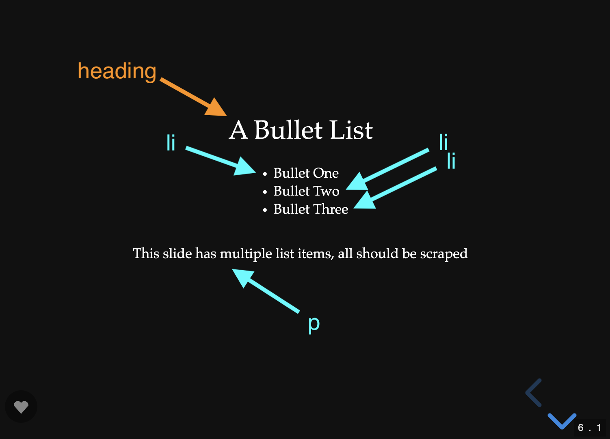
1 | [ |
We can create these records when scraping
1 | const contentSelectors = [ |
At the end we still have a flat list of individual records to upload. We can output messages for each scraped slide using cy.log.
1 | scrapeOneSlide() |
The recorded video clearly shows the number of text records.
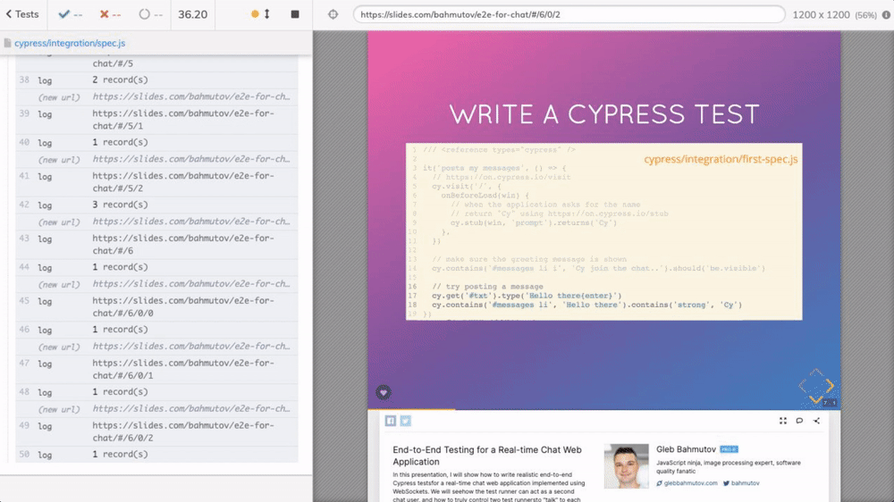
Watching Cypress browse the slides to scrape them is a lot of fun.
Filtering records
Some text elements should be ignored. For example, often my slides have my Twitter handle @bahmutov on them, or individual URLs. We want to filter such text elements out.
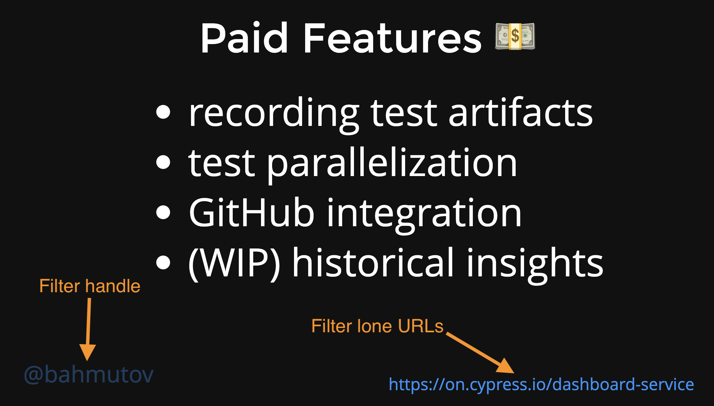
We can filter such individual content fields using heuristics: the search records should be longer than 10 letter, should not match a URL regular expression, or match our list of banned words.
Once scraped we also need to ensure the records do not have duplicates. This can happen when the slide has animation blocks - the common text elements will be the same. Thus we make sure all records are unique by taking all content properties together. For example, the following deck of slides shows the new blocks in each slide.
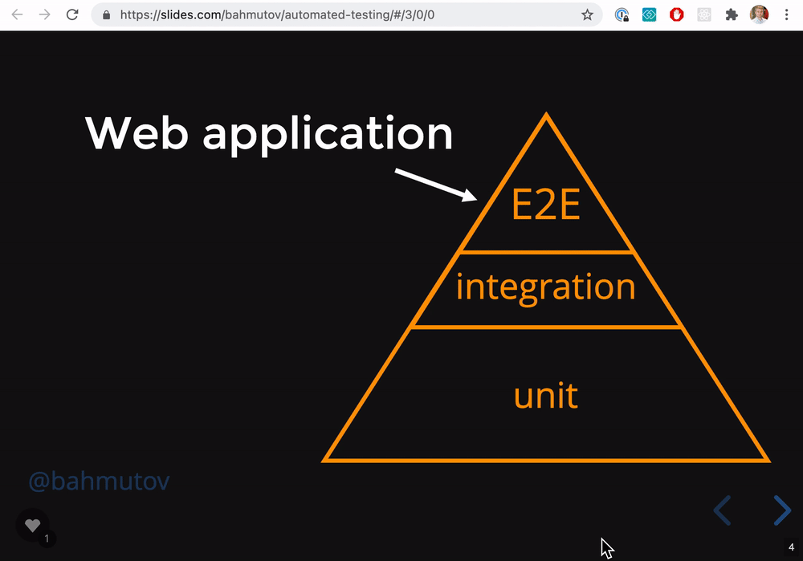
The above deck will generate the "content: Open real browser" four times. The other fields like "lvl0", "lvl1", etc are also going to be exactly the same.
1 | [ |
Thus we remove all duplicate records using the text fields concatenated together to check for uniqueness.
1 | export const removeDuplicates = (records) => { |
Algolia application
Now let's send the records to Algolia index. I have created a new Algolia application with a new index "quotes".
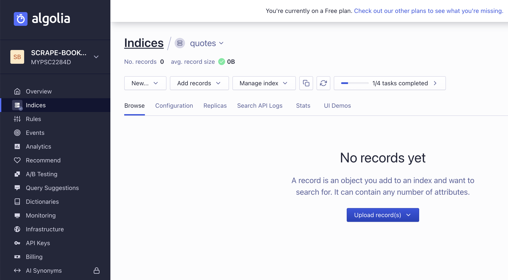
Each record to be sent to Algolia needs a "type" property. Since our records all have content field filled, they have the type content. Otherwise, the type is the highest level number (if the record has lvl3, but no lvl3, then it has the type: lvl3). To send the records we can use the official algoliasearch NPM module.
1 | npm i -D algoliasearch |
The script file send-records.js loads the records, sets the type and replaces the entire index with the new records.
1 | const { scrapeToAlgoliaRecord } = require('./utils') |
The utility function scrapeToAlgoliaRecord moves individual levels into a hierarchy object.
1 | /** |
The final record for a slide with just "Heading 1" could be
1 | { |
The final record with some content could be
1 | { |
Once uploaded, the records are searchable from the Algolia UI
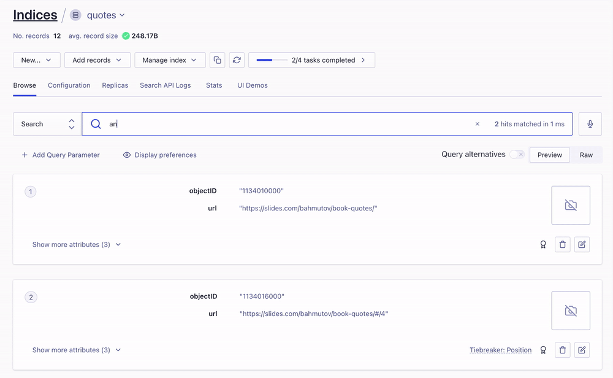
Object IDs
Each object in Algolia's application should have a unique ID. Currently we let Algolia assign unique ids to each uploaded record. In the future this approach would not scale. For example, we might have need to replace a record for the given slide presentation - thus we would need to delete some of the records first, before adding new ones. Let's form a unique record ID based on the presentation slug and the slide number.
1 | const slideId = Cypress._.kebabCase(doc.location.href) |
Our object IDs will be something like:
1 | "https-slides-com-bahmutov-book-quotes-0" |
Replacing objects
Currently we are using index.replaceAllObjects which removes all objects in the index before adding the updated records. If we have multiple presentations in the index, each slide deck will remove all previous ones. Thus we cannot blindly remove all records.
We cannot simply add new records, even when using the unique object IDs because it might leave "orphan" records in the index. Imagine the following scenario:
- we have a long presentation with 100 slides
- we scrape the 100 slides into Algolia application
- we change the presentation removing 99 slides, leaving just a single slide
- we scrape the new presentation with one slide
Hmm, there are 99 records that are still in the index, leading the user to non-existing URLs.
This is why I save the scraped objects and created Algolia records as JSON files before sending them to the Algolia index.
1 | let slug |
Tip: Cypress command cy.writeFile automatically creates the output folder if one does not exist yet.
We commit the output JSON files to Git, you can find my scraped files in the folder scraped.
We can do the following "trick" before scraping the site: load the previous Algolia records and remove all objects using their unique objectID from the file. That will clear the records for this particular presentation, and we will add the new records after scraping. See the Delete objects documentation.
Alternative method: when adding the new presentation slides we can use the presentation slug as a tag. Then, before adding the new records, we can use the Delete By method to remove any records related to this presentation.
1 | const algoliaObjects = records.map(scrapeToAlgoliaRecord).map((r) => { |
Now we can delete all slides belonging to a specific presentation, see the delete-records.js script
1 | const presentationSlug = 'bahmutov-book-quotes' |
The search page
Let's confirm the search works by using a simple HTML page and InstantSearch.js. You can find the full page at index.html
1 | <div class="container"> |
1 | const searchClient = algoliasearch( |
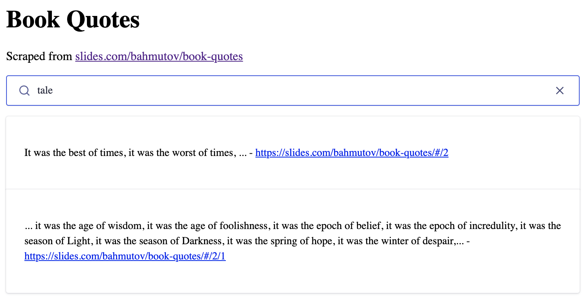
Scraping any URL
Finally, I have refactored the code to make it portable and be able to scrape any Reveal.js deck by just pointing at it via CYPRESS_baseUrl environment variable and running Cypress headlessly. The scraped records are saved as a JSON file for inspection, and also uploaded to Algolia using the cypress/plugins/index.js code. We need to run Cypress with Algolia's app ID and the secret Admin API key to be able to upload the records after scraping.
1 | CYPRESS_baseUrl=https://slides.com/bahmutov/slides-dark-mode \ |
The scraped slides.com/bahmutov/slides-dark-mode has been added to the search index.
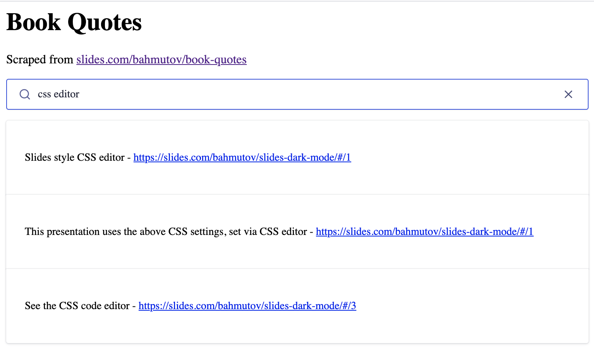
We can scrape multiple decks calling Cypress with each URL via its NPM module api. You can find the full code at scrape-all.js.
1 | const presentations = [...] // all presentation URLs |
From now on, whenever we create another presentation and make it public, we should run the scrape job to make the deck searchable. You can see the search across my Cypress presentations tagged cypress-introduction and cypress.io at cypress.tips/search page. Here is a typical search
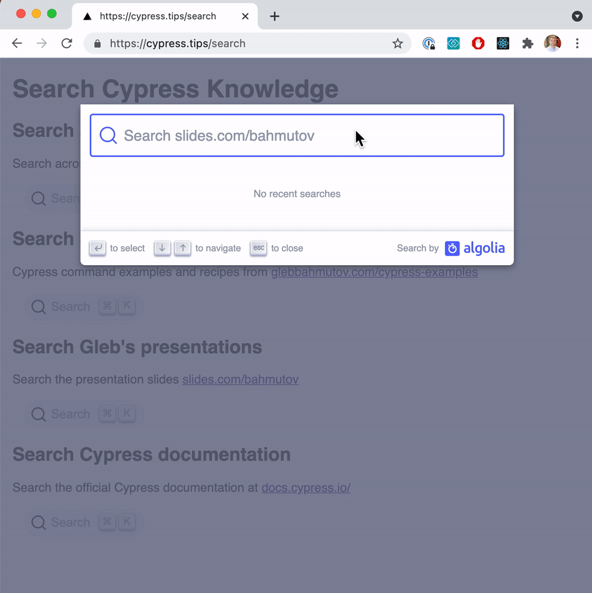
Nice!
See also
- Scraping the List of Presentation Slides
- Scrape Static Site with Algolia
- Search Cypress Algolia documentation index from the terminal cy-search